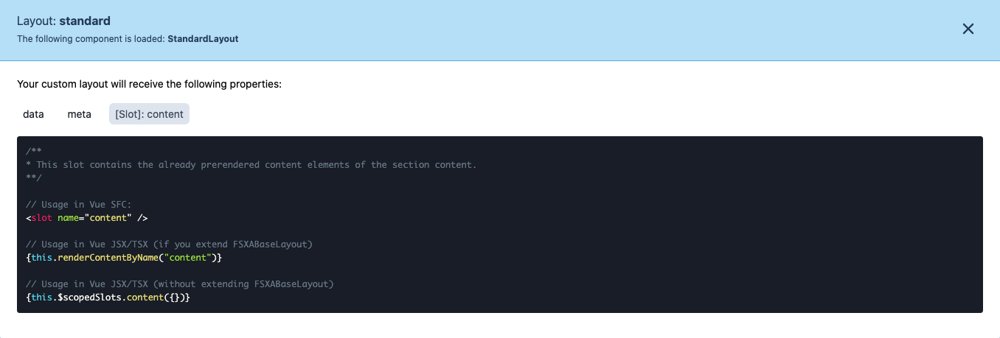

Development Mode
Introduction
The FSXA-PWA features a development mode that helps you to easily map the content coming from the CaaS to your components.
To enable the development mode, the variable devMode must be set to true in the fsxa.config.ts file. Be aware that you have to restart the server when you change anything in this file. This file is also checked into git. So be sure to change the variable back to false before deploying to production.
Missing Components
If you are in development mode and a component on the page has not been developed yet, you will get an info box which shows exactly which component is missing and what information can be addressed.

The components map can be found in the fsxa.config.ts in the root directory of your project.
Info Box
If you have already implemented a component, you will see a question mark icon when hovering over the element.
Clicking on this question mark will provide you with more information about which component is being displayed and what data is available.
Data/Payload
This tab shows you all of the data that is available in the scope of this component. The data is defined by the FirstSpirit Template used to describe the current section or layout.
Meta
This tab may contain information about the route, the FirstSpirit database scheme, entity types, previewId and other FirstSpirit related meta information.
Slots
This tab only appears on layout components. It tells you which slots of your layout component are being used. You can control where you render the slot but you will get prerendered content passed into it. If for example you have a layout with two named slots, header and content the following would be an example of how you would render the slots in your component.

SFC example
<template>
<div class="header">
<slot name="header" />
</div>
<div class="content">
<slot name="content" />
</div>
</template>TSX examples
If you don’t extend FSXABaseLayout
render(){
return(
<div class="header">
{this.$scopedSlots.header}
</div>
<div class="content">
{this.$scopedSlots.content}
</div>
)
}If you extend FSXABaseLayout
class MyComponent extends <FSXABaseLayout>{
render(){
return(
<div class="header">
{this.renderContentByName("header")}
</div>
<div class="content">
{this.renderContentByName("content")}
</div>
)
}
}For more information on slots, check out the Vue.js documentation